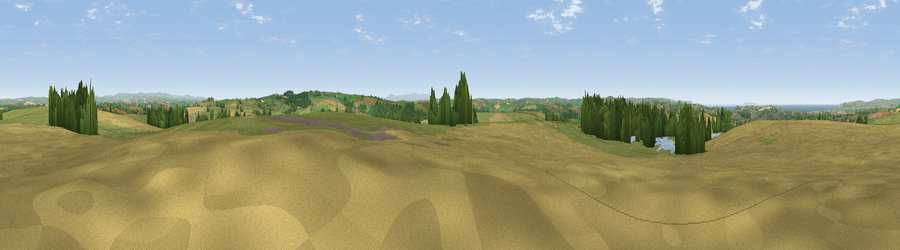

Viewpoint near Alverdiscott
#4815 in England · top 12% of its area beats it · near AlverdiscottWhere it is
The exact computed spot (SS 49100 24800). Click the marker for map links.
The view, rendered

A 360° render of this exact spot computed from the terrain model, tree cover and land cover — summer colours, afternoon light, calibrated against photographs of famous viewpoints. Real trees, hedges and buildings will differ in detail.
The panorama
Grey silhouette: terrain skyline in each direction (720 bearings, Earth curvature and refraction included). Dashed green: skyline with trees (+15 m) and buildings (+8 m) as obstacles. Blue strip: how far the ground is visible on each bearing.
Where the view opens
Wedge length = distance to the farthest visible ground on that bearing (vegetation-aware). Rings at 10, 25 and 50 km.
What fills the view
46% grassland · 35% cropland · 13% woodland · 4% water · 1% built-up
Angular shares of the visible panorama (visual magnitude), not map area. Landscape diversity 0.51 (0–1 Shannon).
Key numbers
More beautiful places nearby
The staircase of upgrades: each row has a higher view potential than everything closer. Driving times are estimates from straight-line distance, calibrated against real road routing — check an actual route before setting out.
| Place | Direction | Drive | Score |
|---|---|---|---|
| Viewpoint near Alverdiscott | NNE · 1 km | ~2 min | 71.7 |
| Viewpoint near Bideford | W · 2 km | ~5 min | 73.5 |
| Viewpoint near Westward Ho! | NW · 7 km | ~14 min | 75.3 |
| Viewpoint near Westward Ho! | WNW · 8 km | ~16 min | 76.2 |
| Viewpoint near Abbotsham | W · 9 km | ~18 min | 76.8 |
| Babbacombe Hill | W · 9 km | ~18 min | 78.7 |
| Viewpoint near Abbotsham | W · 9 km | ~18 min | 79.9 |
| Codden Hill | ENE · 10 km | ~20 min | 81.3 |
51.00274, -4.15205 · source: screening · position refined by local search. Computed location — check access rights before visiting.